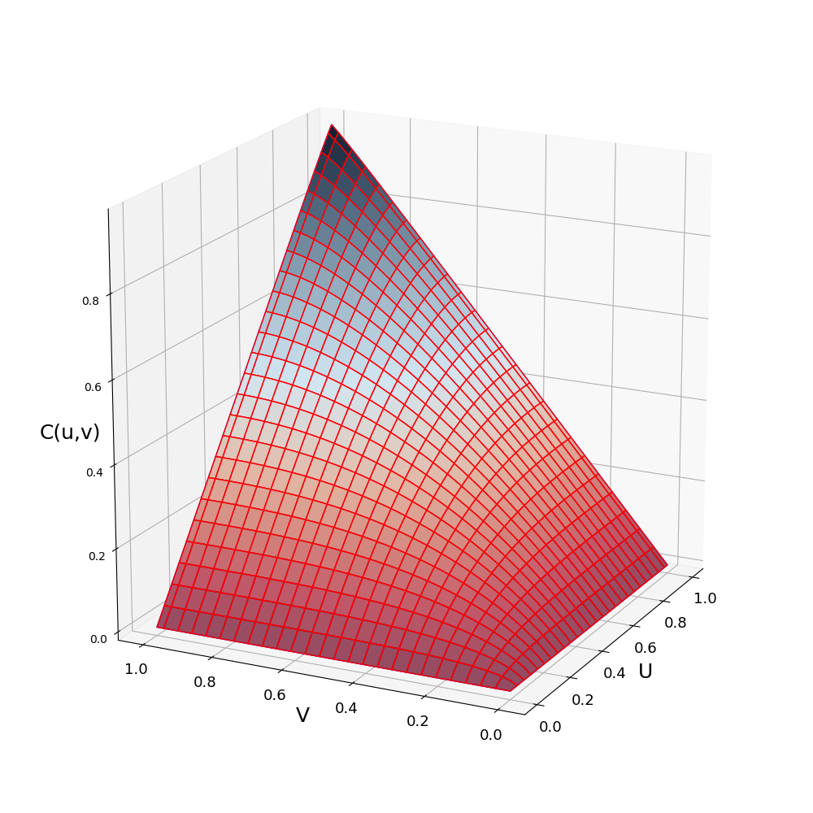

Modelling dependencies with copulas
Any possible multivariate dependence can be encoded in a copula. Copulas, sometimes called dependency functions, are a joint cdf with standard uniform marginals, and are a way to model dependency independently of marginal distributions.
The supported copulas are:
- π: independence
- M: perfect dependence and the upper Frechét bound
- W: opposite dependence and the lower Frechét bound
- Gaussian: family with correlation coefficient r (-1 for W, 0 for π, 1 for M)
- Frank: family with parameter s (0 for W, 1 for π, Inf for M)
- Clayton: family with parameter t (-1 for W, 0 for π, Inf for M)
A copula can be created and plotted in the following way:
julia> C = GauCopula(0.7)
Copula ~ Gau(r=0.7)
julia> plot(C)
A copula $C$ is the function $C:[0,1]^d \rightarrow [0,1]$, where d is the dimension of the copula. Only bivariate copulas are considered so far in ProbabilityBoundsAnalysis.jl. A copula can be evaluated and sampled in the following way:
julia> C(0.5,0.5)
[0.370898, 0.375924]
julia> C([0.2,0.6],[0.3,0.7])
2×2 Array{Interval{Float64},2}:
[0.140274, 0.144236] [0.191086, 0.196042]
[0.270231, 0.275108] [0.524632, 0.53028]
julia> samps = sample(C,10^4);Note that like distributions and p-boxes, in ProbabilityBoundsAnalysis.jl samples and evaluations of copulas are intervals. This also allows copulas to be imprecisely defined (set of dependencies). An imprecise copula can be created by giving the constructor and interval:
julia> C = GauCopula(interval(-0.5,0.5))
Imp Copula ~ Gaussian(r = [-0.5, 0.5])
julia> C(0.5,0.5)
[0.164165, 0.33585]
julia> C([0.2,0.6],[0.3,0.7])
2×2 Array{Interval{Float64},2}:
[0.0162205, 0.116083] [0.082187, 0.18411]
[0.105729, 0.248291] [0.350841, 0.495683]
julia> plot(a)Given any marginal distributions $F_{X}(x)$ and $F_{Y}(y)$ and a copla $C( : )$, a joint distribution can be created: $H(x,y) = C(F_{X}(x), F_{Y}(y))$. In ProbabilityBoundsAnalysis.jl a joint distribution can be created by passing marginals to the copula. For example, a distribution with beta marginals and a gaussian copula:
julia> C = GauCopula(0.7);
julia> J = C(beta(4,2),beta(4,2))
BivPbox ~ Gaussian( beta(mean = 0.66666, var = 0.031746), beta(mean = 0.66666, var = 0.031746); r = 0.7)
julia> plot(J)
A joint distribution can also be sampled:
julia> Jsamps = sample(J,10^4)
julia> scatter(Jsamps)
Notice that samples are bivariate intervals, capturing the representation error of the marginals and the copula. This can be reduced by increasing the descritisation.
A bivariate p-box (bounds on bivariate cdfs) can be created from two marginal p-boxes and an imprecise copula:
julia> a = b = beta(interval(3,5),interval(1,3))
Pbox: ~ beta ( range=[0.0, 1.0], mean=[0.5, 0.83333], var=[0.019841, 0.0375])
julia> C = GauCopula(interval(-0.5,0.5))
Imp Copula ~ Gaussian(r = [-0.5, 0.5])
julia> J = C(a, b)
BivPbox ~ Gaussian( beta(mean = [0.5, 0.833334], var = [0.0198412, 0.0375]), beta(mean = [0.5, 0.833334], var = [0.0198412, 0.0375]); r = [-0.5, 0.5])
julia> plot(J)
If the copula is precise, but the marginals are p-boxes, then the bivariate p-box may also be sampled. This generates a correlated random set.
julia> a = b = beta(interval(3,5),interval(1,3));
julia> C = GauCopula(-0.7);
julia> J = C(a, b);
julia> samps = sample(J,10^3)
1000×2 Array{Interval{Float64},2}:
[0.77936, 0.985591] [0.146632, 0.495935]
[0.570252, 0.913177] [0.559218, 0.907351]
[0.135267, 0.478177] [0.785104, 0.986649]
[0.505333, 0.875713] [0.592774, 0.924402]
[0.666583, 0.955155] [0.260591, 0.65439]
[0.58992, 0.923029] [0.718078, 0.971412]
⋮
[0.748597, 0.979149] [0.285952, 0.684256]
[0.105639, 0.431736] [0.83419, 0.993927]
[0.58992, 0.923029] [0.273638, 0.669988]
[0.293819, 0.693145] [0.48933, 0.865264]
[0.763288, 0.982391] [0.260591, 0.65439]
[0.365677, 0.766742] [0.646901, 0.947835]
julia> scatter(samps)